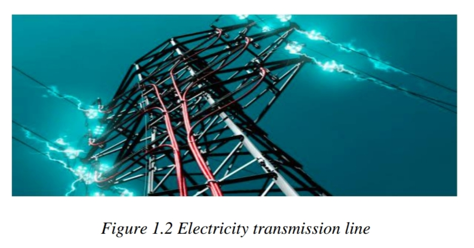
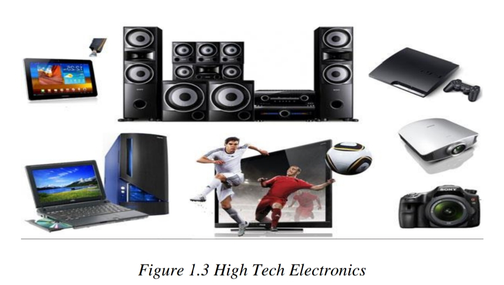
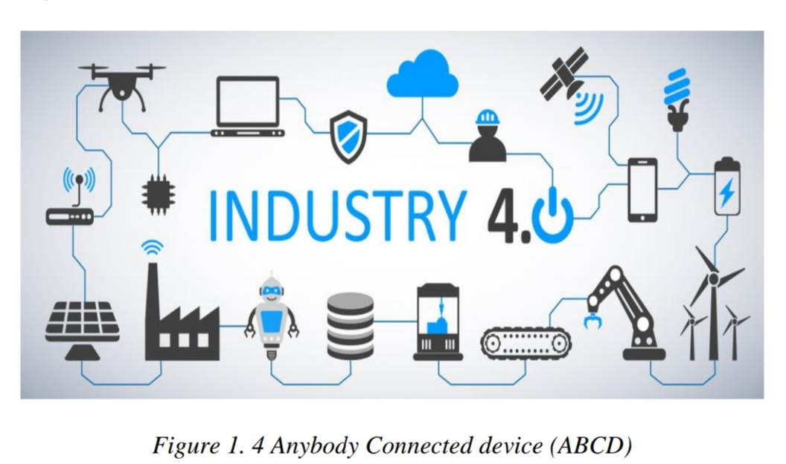

1.1 Evolution of Technology
Emerging technologyis a term generally used to describe a new technology, but it may also refer to the
continuing development of existing technology; it can have slightly different meanings when used in different
areas, such as media, business, science, or education. The term commonly refers to technologies that are
currently developing, or that are expected to be available within the next five to ten years, and is usually
reserved for technologies that are creating or are expected to create significant social or economic effects.
List of some currently available emerged technologies:
- Artificial Intelligence
- Blockchain
- Augmented Reality and Virtual Reality
- Cloud Computing
- Angular and React
- DevOps
- Internet of Things (IoT)
- Intelligent Apps (I-Apps)
- Big Data
- Robotic Processor Automation (RPA)
1.2 Types of Industries
- The Industrial Revolution (IR)
- -is described as a transition to new manufacturing processes. IR was first coined in the 1760s, during
the time where this revolution began. The transitions in the first IR included going from hand production
methods to machines, the increasing use of steam power, the development of machine tools and the rise of
the factory system.
- Industrial Revolution (IR 2.0)
- -The Second IR, also known as the Technological Revolution, began somewhere in the 1870s. The advancements
in IR 2.0 included the development of methods for manufacturing interchangeable parts and widespread
adoption of pre-existing technological systems such as telegraph and railroad networks. This adoption
allowed the vast movement of people and ideas, enhancing communication. Moreover, new technological
systems were introduced, such as electrical power and telephones.

- Industrial Revolution (IR 3.0)
- - IR 3.0 introduced the transition from mechanical and analog electronic technology to digital electronics
which began from the late 1950s. Due to the shift towards digitalization, IR 3.0 was given the nickname,
“Digital Revolution”. The core factor of this revolution is the mass production and widespread use of digital
logic circuits and its derived technologies such as the computer, handphones and the Internet. These technological
innovations have arguably transformed traditional production and business techniques enabling people to
communicate with another without the need of being physically present.

- Industrial Revolution (IR 2.0)
- -Fourth Industrial Revolution (IR 4.0)
Now, with advancements in various technologies such as robotics, Internet of Things,
additive manufacturing and autonomous vehicles, the term “Fourth Industrial Revolution” or IR 4.0 was
coined by Klaus Schwab, the founder and executive chairman of World Economic Forum, in the year 2016. Another major
breakthrough that is associated with IR 4.0 is the adoption of Artificial Intelligence (AI), where we can see it being
implemented into our smartphones. AI is also one of the main elements that give life to Autonomous Vehicles and Automated
Robots.

Future Trends in Emerging Technology
Emerging technology trends in 2019:
- 5G Networks
- Artificial Intelligence (AI)
- Autonomous Devices
- Blockchain
- Augmented Analytics
- Digital Twins
- Enhanced Edge Computing and
- Immersive Experiences in Smart Spaces